trunc의 no-wrap 조건으로 select 값을 고정하기
nuw·nsw가 담은 값의 범위를 선택된 arm 안에서만 사용한다.
LLVM-96765-review.pdf의 전체 내용입니다. 설명·코드·표·검증 기록을 생략하지 않고 옮겼습니다. 그림 안의 문자 인식 결과에는 기호 오류가 있을 수 있어 이미지도 함께 제공합니다.
이 문서의 목차
LLVM-Project #96765 review / Author: Hyoseop Song ([연락처 생략]) / Ref: https://github.com/llvm/llvm-project
LLVM-Project #96765 review
Author: Hyoseop Song Ref: https://github.com/llvm/llvm-project/issues/96765
before read
1. trunc %X to iY : input X 를 Y bit 로 잘라서 반환. 상위 비트는 버림
(ex: trunc i32 258(258 = 00000000 00000000 00000001 00000010) to i8 → 2)
2. select i1 %cond, %a, %b : 조건부 선택.pseudo : if %cond then %a else %b
3. nuw, nsw: "잘려나가는 비트는 전부 0 이거나 (nuw) 전부 최상위 비트와 같아야(nsw) 한다"는 의미. (ex.
trunc nuw i32 3 to i1 → poison (3 ( 0011 ) 을 1비트로 표현할 수 없음), trunc nuw i32 1 to i1→ 1)
overflow 가 발생하면 poison value 를 반환한다.
4. poison: 잘못된 입력을 받은 명령이 즉시 UB 를 내는 대신 돌려주는 값. 경로가 아니라 값이다.
성질: poison 은 그 타입의 아무 값으로 바꿔도 된다 (LangRef: "It is correct to replace a poison value with an undef value or any value of the type") 그래서 src 가 poison 이면 tgt 는 뭘 반환하든 맞는 변환이 된다. 플래그를 위반하는 입력은 검증에서 문제 가 안 됨
select 는 예외가 하나 있음. 조건이 poison 이면 결과도 poison 이지만, 선택 안 된 arm 의 poison 은 전파되지 않는다
Issue summary
trunc nuw x to i1 as branch/select cond implies x
trunc nuw X to i1 이 poison 이 아닌 경우는, nuw 로 drop 되는 bit 는 어차피 전부 0일것이다. ( X ∈ {0,
1} )조건값이 정해지면 X 도 하나로 정해지니, 그 자리를 상수로 밀자 조건이 참인 자리 → X = 1 (예제 1) 조건이 거짓인 간선 → X = 0 (예제 2)
이 페이지에 연결된 자료
페이지 배치·기호·도식 확인하기

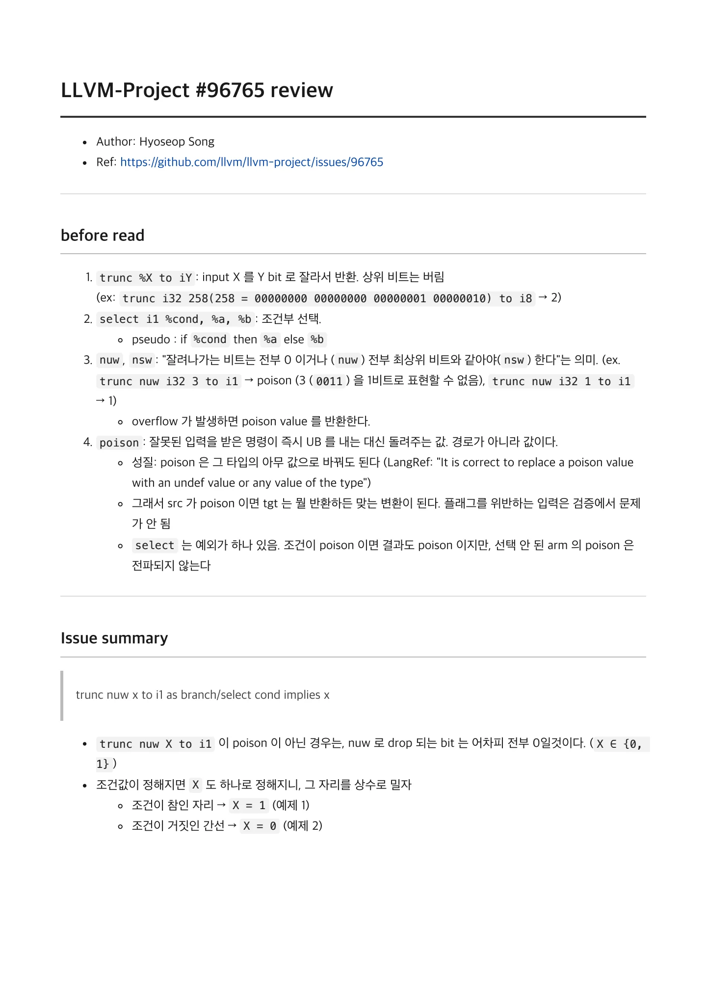
Suggestion / 1. select / define i32 @src(i32 %x, i32 %y) {
Suggestion
1. select
define i32 @src(i32 %x, i32 %y) {
%trunc = trunc nuw i32 %x to i1
%ret = select i1 %trunc, i32 %x, i32 %y
ret i32 %ret
}
---
define i32 @tgt(i32 %x, i32 %y) {
%trunc = trunc nuw i32 %x to i1
%ret = select i1 %trunc, i32 1, i32 %y
ret i32 %ret
}2. br + phi
define i32 @src2(i32 %x, i32 %y) {
bb1:
%cond = trunc nuw i32 %x to i1 // drop 되는 bit 는 전부 0이므로, 0 아니면 1
br i1 %cond, label %bb2, label %bb3bb2:
call void @f()
br label %bb3bb3:
%ret = phi i32 [ %y, %bb2 ], [ %x, %bb1 ]
ret i32 %ret
}Q."x 가 0 또는 1" 이라는 것을 컴파일러에서 인지하기 위해서는?
C++ bool 의 IR 을 예시로 들면:
bool from_ptr(bool *p, bool y) { bool b = *p; return b ? b : y; }$ clang++ -O1 -S -emit-llvm bool.cpp
%3 = load i8, ptr %0, align 1, !range !10, !noundef !11
%4 = trunc nuw i8 %3 to i1bool 은 메모리에서 1 byte 를 차지하는데, real value 는 0 or 1이다. clang IR 에서 아래처럼 bit width 를 calibrate 할 수있다.
%tobool = trunc nuw i8 %b to i1페이지 배치·기호·도식 확인하기

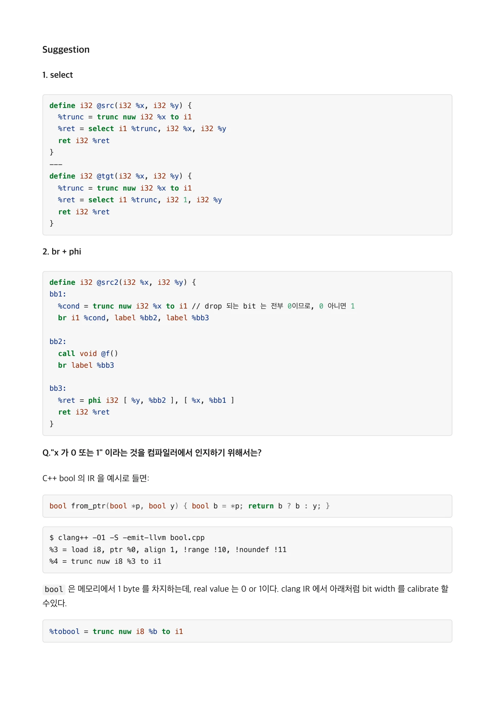
플래그 하나가 "이 값은 0 또는 1"이라는 정보를 담고 있고, 최적화 pass 단에서 aware 할 수 있다. / nuw / 1. Approach
nuw 플래그 하나가 "이 값은 0 또는 1"이라는 정보를 담고 있고, 최적화 pass 단에서 aware 할 수 있다.
1. Approach
항목 | 가정 | 근거 |
|---|---|---|
pass | InstCombine | select 구문을 수정해야 함 |
방식 | 조건의 trunc 에서 플래그와 피연산자를 꺼내, 피연산자가 arm 과 같으면 상수로 교체 |
nuw / nsw 는 middle-end 에서의 IR 구문이라, backend 로 내려가면 사라지므로 IR 단계에서 써야 한다.
검증 순서: Alive2 -> codegen 돌려보기 -> CHECK | <> 실제 PR 과 compare
2. nuw 와 nsw 의 value 처리
LangRef 의 trunc 정의 — https://llvm.org/docs/LangRef.html#i-trunc

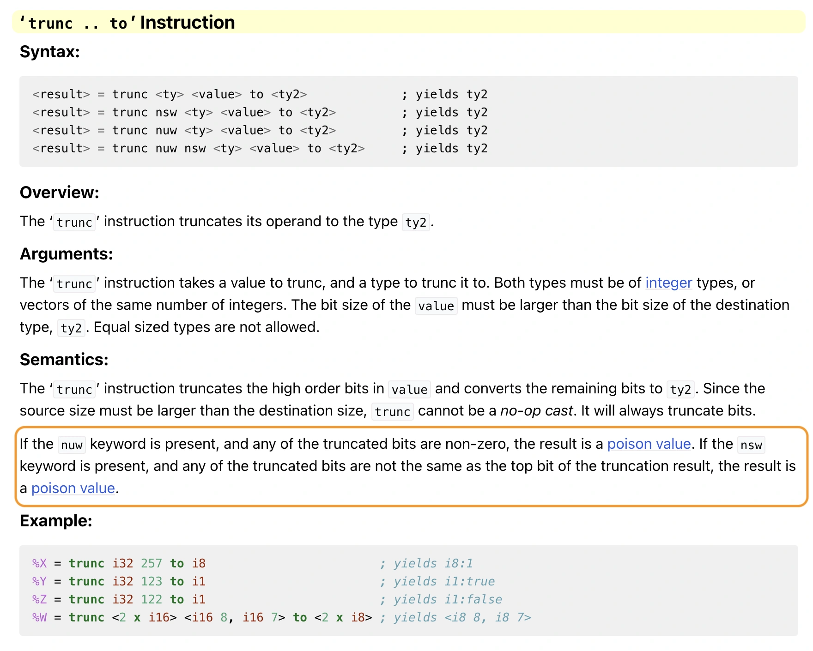
그림 안의 텍스트 · 문자 인식
'trunc .. to' Instruction Syntax: cresult>= trunc cty> <value> to <ty2> cresult>= trunc nsw cty> <value> to <ty2 sresulto = trunc nuw cty> <value> to cty2> <result> = trunc nuw nsw cty> <value> to cty2> ; yields ty2 ; yields ty2 ; yields ty? i yields ty2 Overview: The ' trunc ' instruction truncates its operand to the type ty2. Arguments: The 'trunc ' instruction takes a value to trunc, and a type to trunc it to. Both types must be of integer types,or vectors of the same number of integers. The bit size of the value must be larger than the bit size of the destination type, ty2. Equal sized types are not allowed. Semantics: The ' trunc ' instruction truncates the high order bits in value and converts the remaining bits to ty2. Since the source size must be larger than the destination size, trunc cannot be a no-op cast. It will always truncate bits. If the nuw keyword is present, and any of the truncated bits are non-zero, the result is a poison value. If the nsw keyword is present, and any of the truncated bits are not the same as the top bit of the truncation result, the result is a poison value. Example: 응X = trunc 132 257 to 18 i yields 18:1 응Y = trunc i32 123 to i1 ; yields il:true 응Z = trunc i32 122 to i1 i yields il:false 8N = trunc <2 X 116> <i16 8, 116 7> to <2 X 18 ; yields <18 8, 187
이미지에서 읽은 문자입니다. 코드 기호는 그림에서 확인하세요.
이 페이지에 연결된 자료
페이지 배치·기호·도식 확인하기

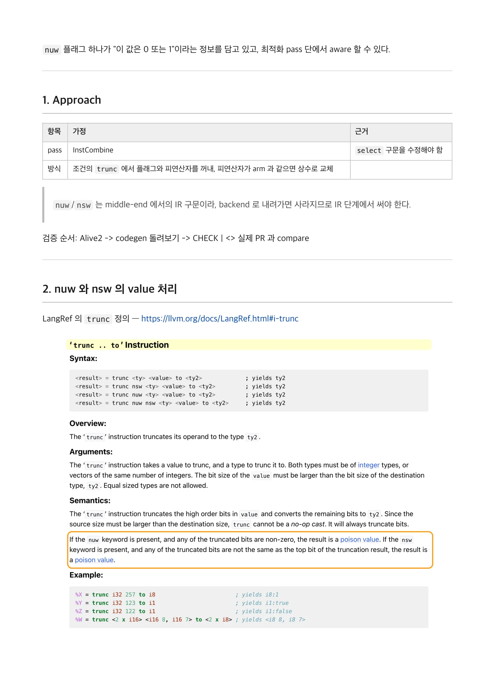
poison 이 아닌 값에서, 는 , 는 로 범위를 줄이게 되고, trunc 하면 i1 이 되므 / nuw X ∈ {0, 1} nsw X ∈ {0, -1} / 로 1bit 만 남는다. 따라서 의 a
poison 이 아닌 값에서, nuw 는 X ∈ {0, 1} , nsw 는 X ∈ {0, -1} 로 범위를 줄이게 되고, trunc 하면 i1 이 되므 로 1bit 만 남는다. 따라서 select 의 arm 은 4가지 경우로 나뉜다.
| | |
|---|---|---|
| 정상, 조건 false | 정상, 조건 false |
| 정상, 조건 true | poison |
| poison | 정상, 조건 true |
| poison | poison |
따라서 4갈래로 확장된다.
# | 플래그 | X 위치 | 그 arm 이 선택될 때 X 는 | 치환값 |
|---|---|---|---|---|
1 | | true arm | bit0=1, 나머지 0 | |
2 | | false arm | 전 비트 0 | |
3 | | true arm | 전 비트 1 | -1 (all ones) |
4 | | false arm | 전 비트 0 | |
false arm 은 둘 다 0 이고 true arm 만 1 / -1 로 갈린다. 이 비대칭이 실제 패치가 두 경우를 별도 if 블록으로 나눈 이유다.
플래그를 위반한 입력은 검증에서 문제가 안 된다. src 가 poison 이면 tgt 는 무엇이든 refinement 가 성립하기 때문이다.
Alive2 결과
링크 | 범위 | 결과 |
|---|---|---|
https://alive2.llvm.org/ce/z/TonKE9 | scalar i32, nuw/nsw × true/false arm 4조합 + br/phi | 5 correct |
https://alive2.llvm.org/ce/z/-nvK9P | 플래그 없는 trunc (negative) | doesn't verify |
Transformation doesn't verify!
ERROR: Value mismatchExample:
i32 %x = #x00000003 (3)
i32 %y = poisonSource: i32 %ret = #x00000003 (3)
Target: i32 %ret = #x00000001 (1)%x = 3 이면 trunc i32 3 to i1 은 1 이라 조건은 참이지만 %x 는 3 이다. 플래그가 없으면 상위 비트를 0 이라고 단정할 수 없다.
페이지 배치·기호·도식 확인하기

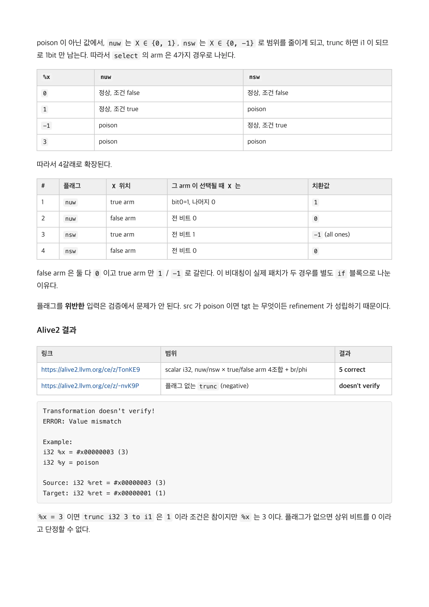
+ 형태 / br phi / positive 5건 중 마지막 쌍( src5 / tgt5 )이 예제 2 의 형태다. 나머지 블록은 같고 bb3 의 phi 한 자리만 다르다.
br + phi 형태
positive 5건 중 마지막 쌍(src5/tgt5)이 예제 2 의 형태다. 나머지 블록은 같고 bb3 의 phi 한 자리만 다르다.
; src5 ; tgt5
%ret = phi i32 [ %y, %bb2 ], [ %x, %bb1 ] %ret = phi i32 [ %y, %bb2 ], [ 0, %bb1 ]bb1 → bb3 간선을 탔다는 건 조건이 거짓이었다는 뜻이라 %x 는 0 이다. 이것도 correct 로 나온다.
같은 IR 을 opt 로 돌리면 pass 옵션에 따라 결과가 갈린다.
$ opt -passes=instcombine -S repro/04-branch-phi.ll # 변화 없음
$ opt -passes='default<O2>' -S repro/04-branch-phi.ll # [ %x, %bb1 ] → [ 0, %bb1 ]하나씩 돌려보면 ipsccp / sccp / correlated-propagation / gvn / newgvn 이 처리하고, instcombine /
instsimplify / simplifycfg / jump-threading 은 변화가 없다. -O2 에서는 IPSCCP 가 먼저 잡는다.InstCombine 담당이 아니라서다.
3. InstCombine : How LLVM middle-end IR pattern is matched
PatternMatch : Inspector of IR
match() 한 줄이 실제로 밟는 경로. 세 번 검사하고, 통과하면 피연산자를 캡처한다.
코드 위치 (base e9446de6df36 )

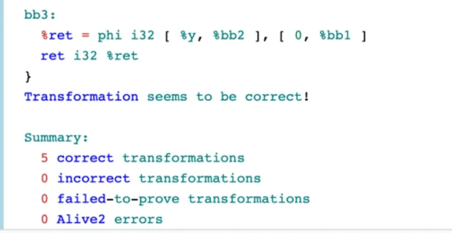
그림 안의 텍스트 · 문자 인식
bb3: 8ret = phi i32 [ 8y, 8bb2 ], [ 0, 8bbl ] ret i32 &ret } Transtormation seems to be correct! Summary: 5 correct transformations o incorrect transformations 0 failed-to-prove transformations 0 Alive2 errors
이미지에서 읽은 문자입니다. 코드 기호는 그림에서 확인하세요.

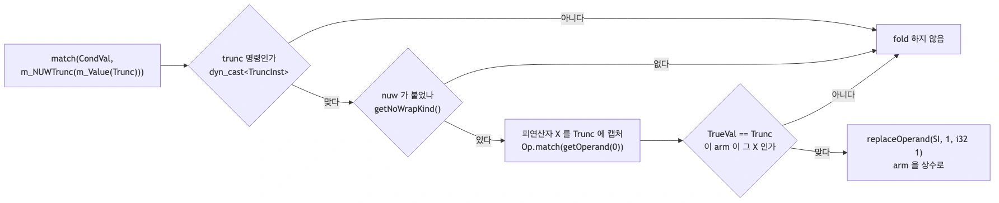
그림 안의 텍스트 · 문자 인식
-아니다 fold 하지 않음 match(Condval, trunc 명령인가 m_NUWTrunc(m_Value(Trunc))) dyn_cast Truncinst• getNoWrapkind0 피연산자 X 를 Trunc 에 캡처 TrueVal == Trunc replaceOperand(Sl, 1, 132 o.MatanRet oerdh 이 arm 이 그 × 인가 arm 을 상수로
이미지에서 읽은 문자입니다. 코드 기호는 그림에서 확인하세요.
페이지 배치·기호·도식 확인하기

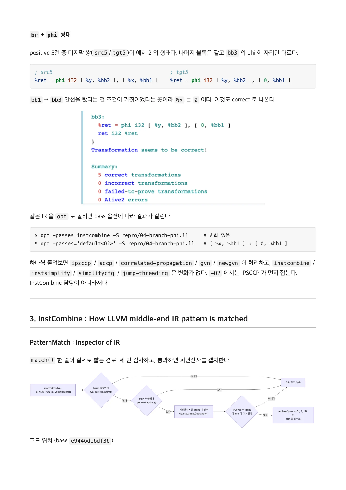
matcher 정의 — / PatternMatch.h:2164 / 이 fold —
matcher 정의 — PatternMatch.h:2164
이 fold — InstCombineSelect.cpp:5305InstCombine 은 IR 패턴을 m_* 조합으로 선언적으로 (declaratively) 검사한다. 예를 들면, match(V, 패턴) 이 bool 을 돌려주고, m_Value(X) 자리에 걸린 값이 X 로 캡처된다.
Value *Trunc;
match(CondVal, m_NUWTrunc(m_Value(Trunc)))
// ^조건이 ^nuw 붙은 trunc 인가? ^맞으면 그 피연산자를 Trunc 에 담아라// llvm/include/llvm/IR/PatternMatch.h:2164
template <typename Op_t, unsigned WrapFlags = 0> struct NoWrapTrunc_match {
template <typename OpTy> bool match(OpTy *V) const {
if (auto *I = dyn_cast<TruncInst>(V)) // 1. Is it trunc inst?
return (I->getNoWrapKind() & WrapFlags) == WrapFlags // 2. Is this nuw/nsw trunc?
&& Op.match(I->getOperand(0)); // 3. Is this the operand
we're looking for?
return false;
}
};m_NUWTrunc(Op) // WrapFlags = TruncInst::NoUnsignedWrap :2260
m_NSWTrunc(Op) // WrapFlags = TruncInst::NoSignedWrap :2267matcher 구현을 사용하면 IR Pass 의 조건 검사 (condition check) 를 조합적으로 작성할 수 있다.
- if (auto *TI = dyn_cast<TruncInst>(CondVal)) {
- if (TI->hasNoUnsignedWrap() && match(CondVal, m_Trunc(m_Value(Trunc))) && ...
+ if (match(CondVal, m_NUWTrunc(m_Value(Trunc))) && ...Point: %1 대신 Trunc 를 쓰는 이유
trunc nuw x to i1 as branch/select cond implies x
이슈가 말한 것 | 코드 | 하는 일 |
|---|---|---|
| | 조건이 nuw 붙은 trunc 인지 |
| 검사 대상이 CondVal | 그게 select 의 조건 자리인지 |
| | 함의 대상이 누구인지 붙잡아 둔다 |
Trunc 라는 이름이 헷갈리는데, trunc 명령이 아니라 그 피연산자(X) 다. 이슈가 말한 "implies x" 의 x 가 바로 이 것이다.
캡처가 필요한 이유는 함의가 그 x 에 대해서만 성립하기 때문이다. arm 에 있는 값이 그 x 와 같은 값일 때만 상수로 밀 수 있다.
페이지 배치·기호·도식 확인하기

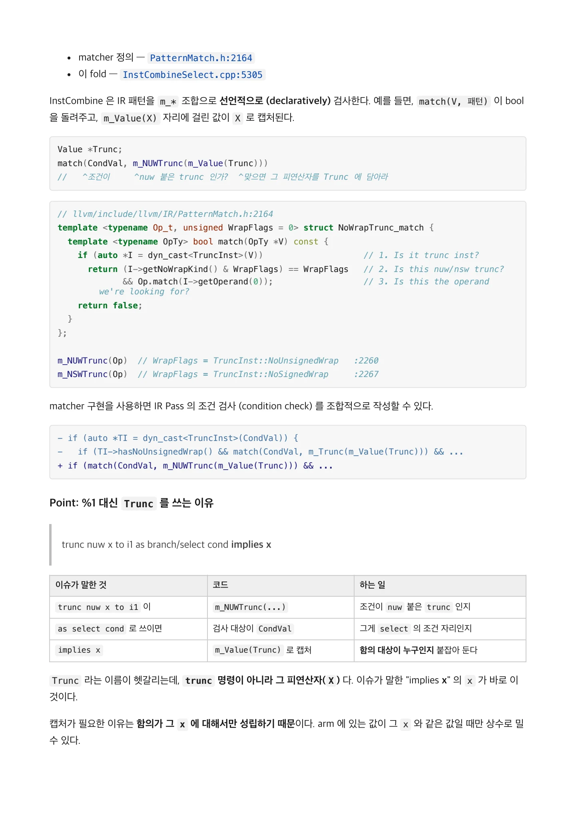
if (match(CondVal, m_NUWTrunc(m_Value(Trunc)))) // 조건이 어떤 값에 대해 무언가를 함의한다 / if (TrueVal == Trunc) // 이 arm 이 바
if (match(CondVal, m_NUWTrunc(m_Value(Trunc)))) // 조건이 어떤 값에 대해 무언가를 함의한다
if (TrueVal == Trunc) // 이 arm 이 바로 그 값이다
return replaceOperand(SI, 1, ConstantInt::get(TrueVal->getType(), 1));
// ^ 함의된 값. nuw + true arm 이면 1무엇으로 고정할지는 플래그와 arm 위치가 정한다 (2절 표). nuw 면 1, nsw 면 -1, false arm 이면 둘 다 0. 실제 패 치가 nuw / nsw 를 별도 if 블록으로 나눈 이유가 이것이다.
같은 아이디어가 이미 일반형으로 있다
"조건이 참이면 피연산자 값이 정해진다"는 InstCombine 에 이미 있는 변환이다.
// InstCombineSelect.cpp:4859 (visitSelectInst)
if (CmpInst *CI = dyn_cast<CmpInst>(CondVal))
if (Instruction *NewSel = foldSelectValueEquivalence(SI, *CI))
return NewSel; | 이 패치 | |
|---|---|---|
조건 | | |
사실이 담긴 곳 | 비교 명령 자체 | poison 플래그 |
전파 범위 | | arm 이 X 자체일 때만 |
입구가 dyn_cast<CmpInst>(CondVal) 이라 trunc 는 못 들어간다. 그래서 visitSelectInst 말미에 별도 코드로 붙었고, 리뷰에서 simplifyWithOpReplaced 일반화 얘기가 나온 것도 여기서다.
4. codegen 관찰
codegen 돌려보니, 상수값을 1 로 implicit 해도 fold 는 명령 수를 줄이는 데 큰 영향을 주지는 않았다.
llc -mtriple=x86_64-unknown-linux-gnu -O2 codegen/{src,tgt}.ll
llc -mtriple=aarch64-unknown-linux-gnu -O2 codegen/{src,tgt}.llx86_64
; src ; tgt
movl %esi, %eax testb $1, %dil
testb $1, %dil movl $1, %eax
cmovnel %edi, %eax cmovel %esi, %eax
retq retqAArch64
페이지 배치·기호·도식 확인하기

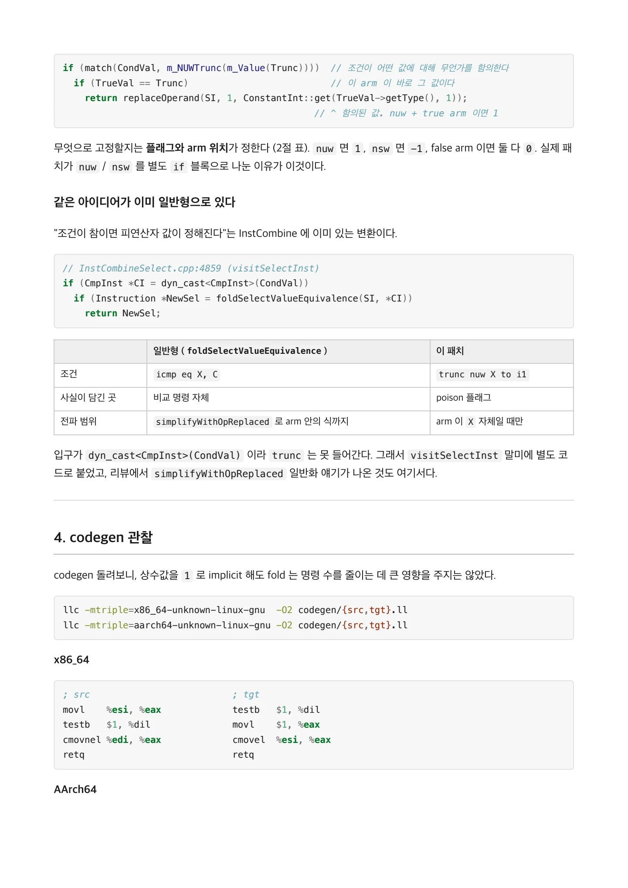
; src ; tgt / tst w0, #0x1 tst w0, #0x1 / csel w0, w0, w1, ne csinc w0, w1, wzr, eq
; src ; tgt
tst w0, #0x1 tst w0, #0x1
csel w0, w0, w1, ne csinc w0, w1, wzr, eq
ret ret타깃 아키텍처에 따라 나오는 모양은 달랐지만, 명령 수는 양쪽 다 fold 전후가 같았다.
x86 은 답을 하나 깔아두고 조건이 맞으면 덮어쓰는 모양인데, 깔아두는 값이 %y 에서 상수 1 로 바뀐 것뿐이다. 그래서 cmov 조건도 ne → e 로 뒤집힌다.
AArch64 는 csel 이 csinc 로 바뀐다. csinc 는 "조건이 아니면 +1" 이라, 항상 0 인 레지스터( wzr )에 +1 을 시켜 상수 1 을 만든다. 상수를 적재하는 mov 가 따로 안 든다.
즉 이 fold 의 근거는 성능이 아니다.
%x 의 사용처가 2곳에서 1곳으로 줄어 live range 가 짧아진다 true arm 이 상수가 되어 후속 pass 의 상수 전파 기회가 열린다
실사용 형태에서는 select 가 통째로 죽는다 (Appendix)
명령어가 줄지 않아도 canonical form 개선이 후속 최적화를 여는 사례다.
5. 테스트
.ll 을 upstream lit 형식( RUN: + CHECK: )으로 쓰고, CHECK 구문은 llvm/utils/update_test_checks.py로 생성했다. 그래서 lit 없이 opt | FileCheck 만으로 검증된다.
$ ./run-tests.sh ~/Project/llvm-project/build
PASS 01-issue-src.ll
PASS 02-matrix.ll
PASS 03-infinite-loop.ll
PASS 04-branch-phi.ll
PASS 05-edge.ll
PASS 06-negative.ll
PASS 07-poison-note.ll
PASS 08-real-world.ll
PASS 09-context-boundary.ll
PASS 10-odd-widths.ll
---- PASS=10 FAIL=0 ----이 테스트가 정말 이 fold 를 검증하는지 보려면, fold 를 끈 빌드로 같은 걸 돌려보면 된다.
페이지 배치·기호·도식 확인하기

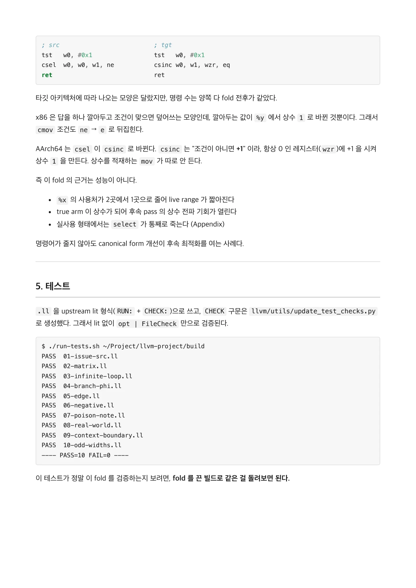
$ git apply patches/00-disable-fold.patch && ninja -C build opt / $ ./run-tests.sh ~/Project/llvm-project/buil
$ git apply patches/00-disable-fold.patch && ninja -C build opt
$ ./run-tests.sh ~/Project/llvm-project/build
PASS 03-infinite-loop.ll
PASS 04-branch-phi.ll
PASS 06-negative.ll
PASS 07-poison-note.ll
---- PASS=4 FAIL=6 ----positive 6개가 골라서 깨지고, 나머지 4개는 그대로 통과한다. 남은 4개는 이 fold 에 의존하지 않는 테스트다 — 변환되
면 안 되는 것( 06-negative ), InstCombine 담당이 아닌 것( 04-branch-phi ), 그리고 03 / 07 . 통과·실패가 갈리는 모양 자체가 테스트 설계의 검증이다.
Positive
테스트 | 결과 |
|---|---|
nuw / true arm | |
nuw / false arm | |
nsw / true arm | |
nsw / false arm | |
| |
uniform splat <2 x i8> | |
Edge
테스트 | 확인 | 결과 |
|---|---|---|
| trunc _ to i1 최소 폭 ( i1 은 폭이 같아 유 효한 trunc 가 아님) | 정상 fold |
| all-ones 확장 오류 | 정상 (초기 구현은 여기서 miscompile) |
| 2의 거듭제곱이 아닌 폭 | 정상 |
| 메타데이터 보존 | 보존됨 |
조건이 multi-use | one-use 필요 여부 | 불필요 |
X 가 select 바깥에서 도 쓰임 | 문맥 한정 사실이 새는가 | 바깥 X 유지됨 |
피연산자가 상수 | 무한 루프 | 정 PR #173704) |
페이지 배치·기호·도식 확인하기

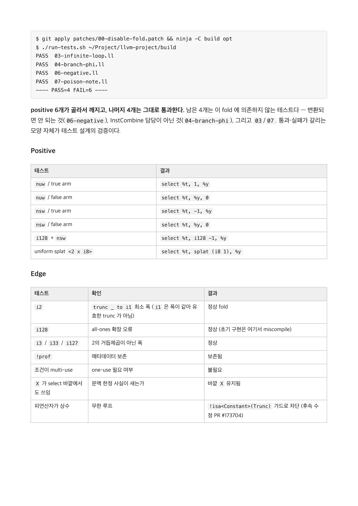
Negative / 테스트 이유 / 플래그 없는 상위 비트를 단정할 수 없음 (정확성)
Negative
테스트 | 이유 |
|---|---|
플래그 없는 trunc | 상위 비트를 단정할 수 없음 (정확성) |
arm 이 X 가 아닌 %z | 치환 근거 없음 |
조건이 무관한 %w 의 trunc | 조건과 값이 연결되지 않음 |
non-splat vector | lane 교차로 원소별 가정이 깨짐 |
문맥 경계 — 코드에 안 적힌 정확성 조건
X == 1 은 무조건 참인 사실이 아니라 조건이 참인 경로에서만 성립한다. 이 fold 가 안전한 이유는 치환 대상이 select 의 arm 이라 그 문맥 안에 머물기 때문이다.
; 입력 ; 출력
%t = trunc nuw i8 %x to i1 %t = trunc nuw i8 %x to i1
%s = select i1 %t, i8 %x, i8 %y %s = select i1 %t, i8 1, i8 %y
%outside = add i8 %x, 10 %outside = add i8 %x, 10 ; %x 그대로바깥의 %x 까지 1 로 바꿨다면 miscompile 이다. %x = 0 이면 조건이 거짓이라 %outside 는 10 이어야 하는데 11 이 된다.
이 조건은 arm 만 건드린다는 구조 덕분에 자동으로 보장되므로 코드에 if 로 나타나지 않는다.
페이지 배치·기호·도식 확인하기

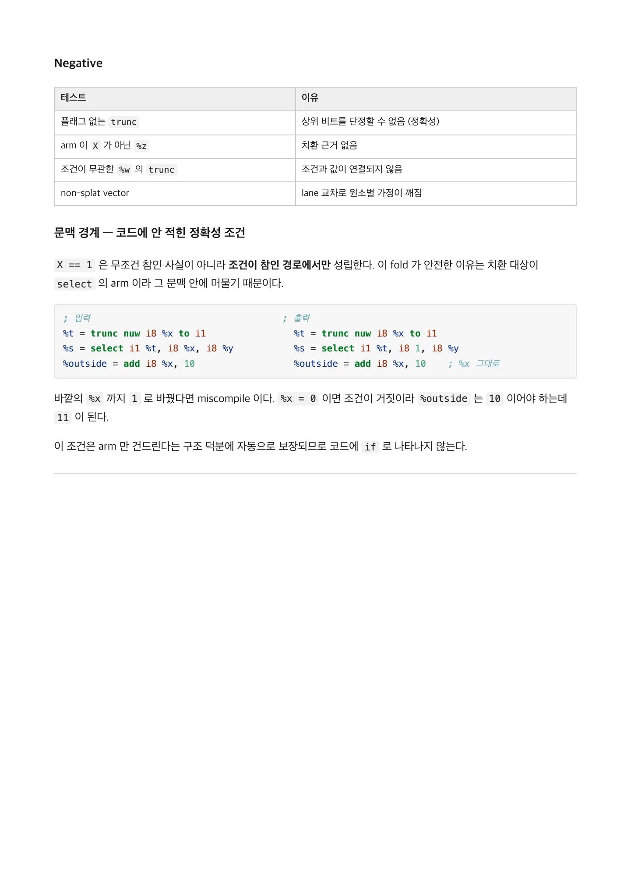
6. Updated Patch / // select (trunc nuw X to i1), X, Y --> select (trunc nuw X to i1), 1, Y / // select (trunc
6. Updated Patch
// select (trunc nuw X to i1), X, Y --> select (trunc nuw X to i1), 1, Y
// select (trunc nuw X to i1), Y, X --> select (trunc nuw X to i1), Y, 0
// select (trunc nsw X to i1), X, Y --> select (trunc nsw X to i1), -1, Y
// select (trunc nsw X to i1), Y, X --> select (trunc nsw X to i1), Y, 0
Value *Trunc; // input value- if (auto *TI = dyn_cast<TruncInst>(CondVal)) {
- if (TI->hasNoUnsignedWrap() && match(CondVal, m_Trunc(m_Value(Trunc))) &&
- match(TrueVal, m_Specific(Trunc)))
- return SelectInst::Create(CondVal, ConstantInt::get(TrueVal->getType(), 1),
FalseVal);
- }+ if (match(CondVal, m_NUWTrunc(m_Value(Trunc))) && !isa<Constant>(Trunc)) {
+ if (TrueVal == Trunc)
+ return replaceOperand(SI, 1, ConstantInt::get(TrueVal->getType(), 1));
+ if (FalseVal == Trunc)
+ return replaceOperand(SI, 2, ConstantInt::get(FalseVal->getType(), 0));
+ }
+ if (match(CondVal, m_NSWTrunc(m_Value(Trunc))) && !isa<Constant>(Trunc)) {
+ if (TrueVal == Trunc)
+ return replaceOperand(SI, 1, Constant::getAllOnesValue(TrueVal->getType()));
+ if (FalseVal == Trunc)
+ return replaceOperand(SI, 2, ConstantInt::get(FalseVal->getType(), 0));
+ }Appendix
opt-benchmark : 패치 영향도 파악 (before patch)
link: https://github.com/dtcxzyw/llvm-opt-benchmark/issues/803
purpose: Revise 에 대한 novelty 를 보기위해 OSS 들에서의 영향도 벤치를 수행하는 절차가 있었다. patch 전후
로 IR 을 비교했을 때, select 가 사라진 프로젝트를 찾아야 patch 의 효과를 알 수 있을 것이다.
; gromacs/optimized/colvarparse.cpp.ll
%26 = trunc nuw i8 %.018 to i1
%spec.store.select = select i1 %26, i8 %.018, i8 1이슈 예제는 원리를 보여주려고 pseudo 를 써준거였고, imply 하는 것은 이미 하위 pass 에서 upsolve 되고있었다.
결과를 보면 대부분 false 값이 1로 들어가고 있었다.
이부분에서 select 가 사라지면, 후속 pass 에서 상수 전파가 일어나고, dead code 제거가 일어나게 된다.
이미 잘 최적화된 코드라서, select 가 사라져도 instruction 수가 줄어드는 것은 아니었다.
페이지 배치·기호·도식 확인하기

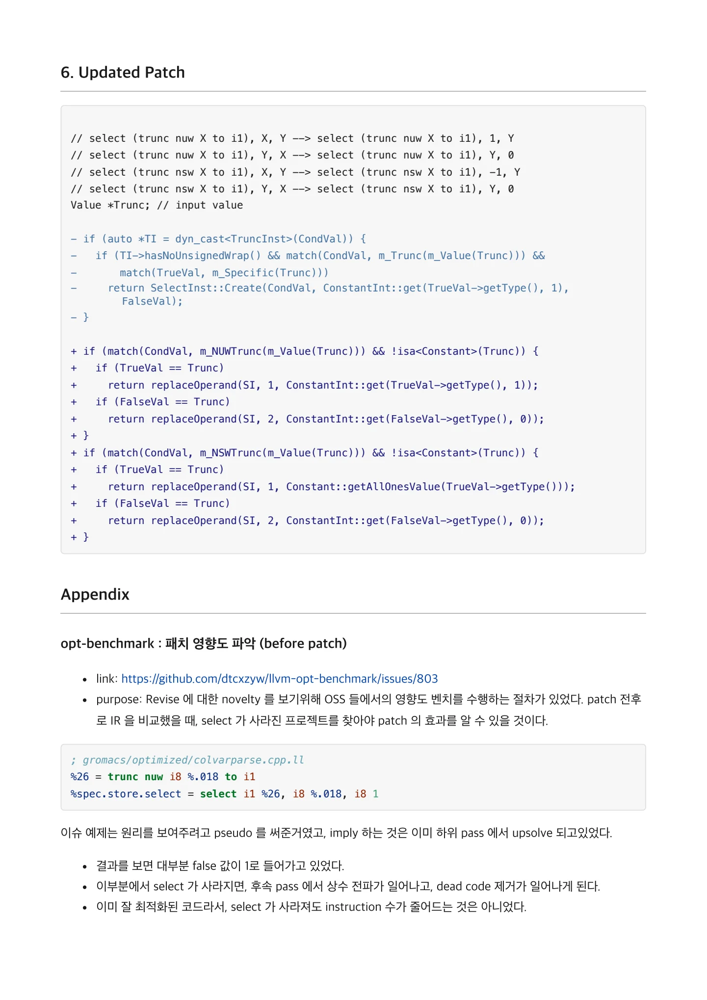
$ opt -passes=instcombine -S repro/08-real-world.ll # 패치 전 / define i8 @real_world(i8 %x) { / %tobool = trunc
$ opt -passes=instcombine -S repro/08-real-world.ll # 패치 전
define i8 @real_world(i8 %x) {
%tobool = trunc nuw i8 %x to i1
%spec.select = select i1 %tobool, i8 %x, i8 1
ret i8 %spec.select
}$ opt -passes=instcombine -S repro/08-real-world.ll # 패치 후
define i8 @real_world(i8 %x) {
ret i8 1
}이슈 예제 | 실사용 형태 | |
|---|---|---|
입력 | | |
출력 | | |
페이지 배치·기호·도식 확인하기

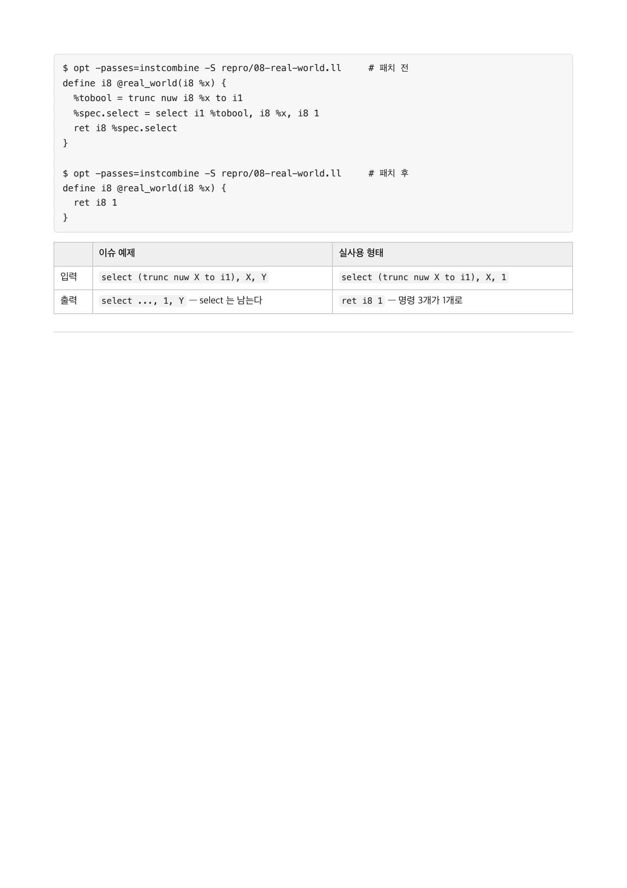
핵심 원리와 편집 주석
플래그가 주는 값의 범위
trunc nuw X to i1이 poison이 아니면 X는 0 또는 1이다. trunc nsw X to i1이면 X는 0 또는 -1이다.
| 플래그 | X가 true arm일 때 | X가 false arm일 때 |
|---|---|---|
| nuw | 1 | 0 |
| nsw | -1 | 0 |
%t = trunc nuw i8 %x to i1
%s = select i1 %t, i8 %x, i8 %y
; true arm의 %x만 1로 바꾼다.
%s.folded = select i1 %t, i8 1, i8 %y문맥을 벗어나면 안 되는 사실
X가 1이라는 사실은 선택 조건이 참인 경로 안에서만 성립한다. select 바깥의 X 사용처를 1로 바꾸면 안 된다.
플래그가 없는 trunc에는 이 추론을 적용할 수 없다. 예를 들어 X=3이면 하위 비트는 1이지만 원래 값은 1이 아니다.
구현과 경계
- 조건이 m_NUWTrunc 또는 m_NSWTrunc와 일치하는지 확인한다.
- 선택 값이 바로 그 trunc의 입력 X인지 확인한다.
- 상수 입력의 반복 fold를 막는 조건을 유지한다.
- -1은 결과 타입 전체가 1인 상수로 만든다.
- 새 select 대신 기존 명령어의 해당 피연산자를 바꾸는 경로를 검토한다.
branch와 PHI의 비슷한 사례는 다른 패스가 처리할 수 있다. 원자료의 실험에서는 단독 InstCombine과 전체 O2 파이프라인의 결과가 달랐다.
검증 기록과 효과
작성자는 Alive2 positive 사례와 플래그가 없는 negative 사례를 비교했다. 테스트는 fold를 켠 빌드에서 10건 통과했고, fold를 끈 빌드에서는 그중 6건이 실패했다고 기록했다.
단순 예제의 x86-64·AArch64 명령어 수는 전후가 같았다. 반면 선택되는 두 값이 모두 1이 되는 실사용 형태에서는 함수가 ret 1로 단순화되었다.
문서 전문과 버전
- PDFPDF 원자료 · 12쪽LLVM-96765-review.pdf
각 자료는 별도의 버전입니다. 같은 주제라도 구현 상태·설명 범위·수치가 다를 수 있습니다.
관련 이슈와 PR
구현·병합 상태와 측정값은 해당 제출 자료의 작성 시점 기준입니다.